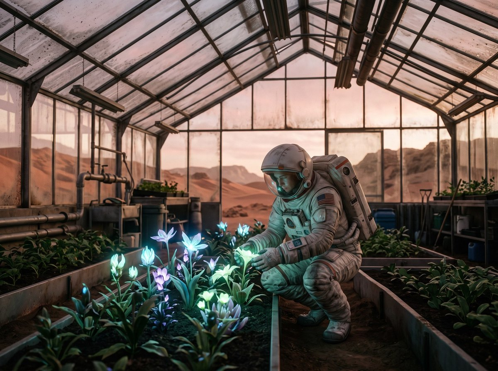
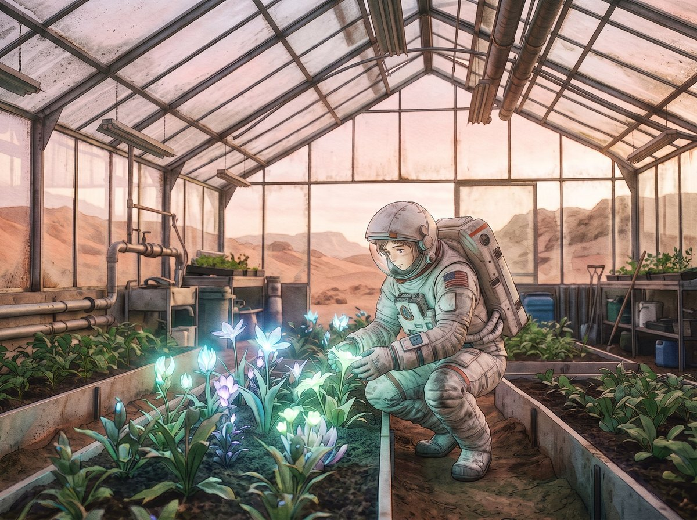

Producție multimedia · 2026
Inteligența
Artificială
și noua eră a producției multimedia
02 / Despre mine
Cine sunt eu?
03 / Agenda
Despre ce vorbim azi
≈ 45 min · 4 capitole
04 / Istoria AI
De la o întrebare la o revoluție
05 / Cine construiește AI
Companiile care modelează AI-ul
Peisajul AI · 2026
9
companii-cheie
SUA6
China3
Modele închise și deschise, într-o competiție globală.
06 / Modele AI
Modele AI: închise sau deschise?
Closed
Folosești modelul doar prin aplicație sau API.
GPTGeminiClaudeMidjourney
Open-weight
Descarci modelul; licența poate avea limite.
LlamaQwenDeepSeekFLUX.2 [dev]
Open-source
Model, cod și date — totul deschis.
OLMoPythia
3M+modele publice pe Hugging Face
07 / Image generation
AI Image Generation
Text-to-image

Nano Banana 2.1
Image-to-image
imaginea + „stil anime în acuarelă”

OriginalRezultat
08 / Video generation
AI Video Generation
HiggsfieldKling AIRunwayGoogle VeoSeedanceSora · închis 2026
Image-to-video · Kling 2.5
REC
Camera · dolly-in
00:00:00:00
Cadru de start · imagine
←
Text-to-video
„cocoară origami care prinde viață”
Text-to-VideoImage-to-VideoCamera movementCharacter consistencyAI video editing
09 / Audio generation
AI Audio Generation
Clonarea vocii fără acord = problemă etică și legală.
10 / Pipeline creativ
AI în tot pipeline-ul creativ
Omul rămâne regizorul
viziune · selecție · gust · decizia finală
11 / AI Agents & MCP
De la chatbot la AI Agent
Chatbot
Întrebare→Răspuns
îți spune ce să faci
AI Agent
Obiectiv→Plan→Unelte→Rezultat
face el, pas cu pas
Exemplu · reel în Premiere Pro
12 / Perspectiva mea
Nu există un model AI perfect
Nu caut cel mai bun model —
caut cea mai bună combinație.
- fiecare model are un punct forte
- testez și compar rezultatele
- verific mereu ce iese
13 / Prețuri
Cât costă AI-ul?
Stack-ul meu · abonamente / lună
Aproape toate au plan gratuit · planurile pentru uz intens: $100–200+ / lună · prețuri SUA, fără TVA, nov. 2026
14 / Limite & viitor
Limite, riscuri și viitor
Azi · limite
Mâine · viitor
15 / Demonstrație
De la idee la produs final
01 Idee
LLM · ChatGPT / Claude
02 Storyboard
schiță generată cu AI
03 Cadru-cheie
Nano Banana
04 Animație
Kling · image-to-video
05 Sunet & montaj
ElevenLabs · Suno · Premiere Pro
Întrebarea finală
Va înlocui AI-ul oamenii creativi —
sau oamenii creativi care știu să folosească AI
îi vor înlocui pe cei care nu știu?
16 / Surse
Surse & resurse
Mulțumesc! Întrebări?
Imaginile și clipurile din exemple au fost generate cu AI. Informații verificate în noiembrie 2026.